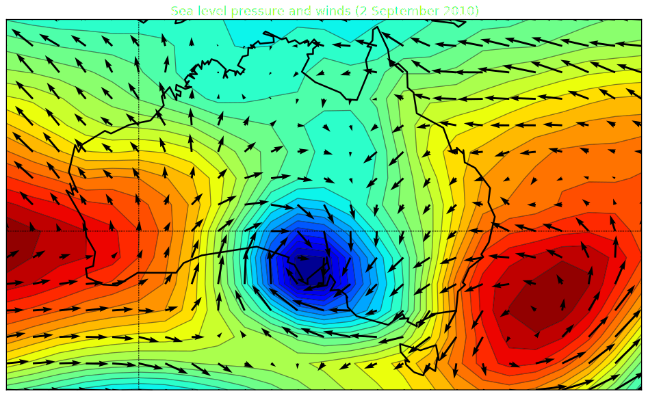
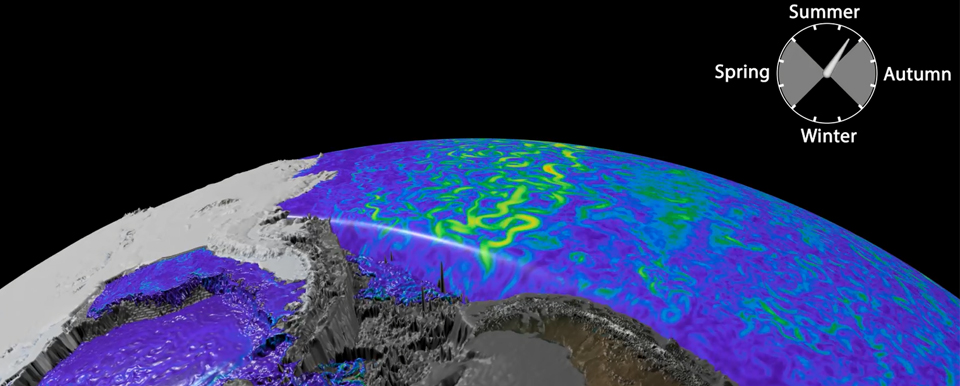
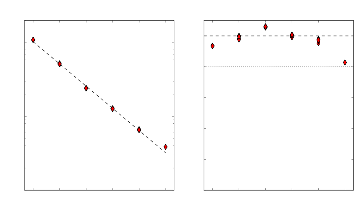
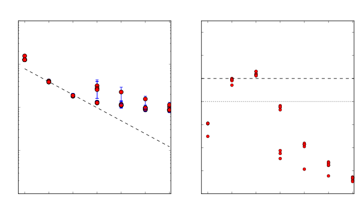

Plumbing for Exascale with High Resolution Ocean Simulations
Marshall Ward
National Computational Infrastructure

Atmospheric scales

Atmospheric scales
Atmospheric scales

Ocean scales

Length scale of the ocean

(Hallberg 2013)
0.1° is a minimum for Southern Ocean dynamics
Model dynamics
Mostly a hyperbolic PDE with constraints
$$ \begin{align} p_z &= -g \rho \\ \mathbf{u}_t + \mathbf{u} \cdot \nabla \mathbf{u} + w \mathbf{u}_z + f \hat{z} \times \mathbf{u} &= -\tfrac{1}{\rho} \nabla p + \mathcal{F} \\ \phi_t + \mathbf{u} \cdot \nabla \phi + w \phi_z &= \mathcal{F}_\phi \ (\phi \in T, S, \ldots) \\ \nabla \cdot \mathbf{u} + w_z &= 0 \\ f(\rho, T, S, ...) &= 0 \end{align} $$But there are a lot of additional terms and forcings
Ocean modelling at NCI
| Model | Resolution | Grid | CPUs |
|---|---|---|---|
| ACCESS-CM | 1° | 360 x 300 | 40 |
| 0.25° | 1440 x 1080 | 960 | |
| OFAM | 0.1° to 2° | 1191 x 968 | 384 |
| 0.1° | 3600 x 1500 | 512 | |
| ARCCSS (GFDL) | 0.25° | 1440 x 1080 | 960 |
| 0.1° | 3600 x 2700 | 9196 |
Speedup by tiling parallelisation

Parallelisation by domain decomposition
Local halo communication

Model configurations
0.25° grid
- 1440 x 1080 grid
- 50 level
- 30-minute timestep
0.1° grid
- 3600 x 2700 grid
- 50 level
- 5-minute timestep

0.25° Scaling results

0.1° Scaling results
0.25° submodels

0.1° submodels

Concurrent 1-year MOM 5
| CPUs | Runtime (s) | CPU Hrs | yr/day |
|---|---|---|---|
| 960s | 7364.9 | 1966.1 | 11.7 |
| 1920s | 3986.8 | 2126.3 | 21.7 |
| 2240c | 3347.5 | 2112.4 | 25.8 |
| 3840s | 2504.3 | 2776.5 | 34.5 |
| 4480c | 1919.6 | 2510.0 | 45.0 |
| 8960c | 1500.9 | 3964.8 | 57.6 |
Subroutine analysis

3D Tracer advection

2D ocean surface (barotropic) solver
2D ocean surface smoothing

MOM 5 vectorisation
| Subroutine | FLOPs | % vector |
|---|---|---|
| MAIN | 2.04e+10 | 0.881 |
| update_ocean_model | 1.87e+10 | 0.91 |
| update_ocean_tracer | 8.40e+09 | 0.929 |
| vert_mix_coeff | 2.04e+09 | 0.809 |
| ocean_explicit_accel_a | 1.95e+09 | 0.928 |
| update_ocean_barotropic | 1.80e+09 | 0.945 |
| ocean_eta_smooth | 1.78e+07 | 0.875 |
| update_ice_model_slow_dn | 7.48e+08 | 0.832 |
MOM 6 vectorisation
| Subroutine | FLOPs | % vector |
|---|---|---|
| MAIN | 5.20e+10 | 0.653 |
| update_ocean_model | 5.00e+10 | 0.657 |
| step_mom_dyn_split_rk2 | 3.80e+10 | 0.677 |
| ale_main | 9.85e+07 | 0.598 |
| diabatic | 3.54e+09 | 0.476 |
| mixedlayer_restrat | 1.83e+09 | 0.569 |
| advect_tracer | 1.17e+09 | 0.892 |
| update_ice_model_slow_dn | 1.08e+09 | 0.769 |
NEMO 3.4 vectorisation
| Subroutine | FLOPs | % vector |
|---|---|---|
| stp | 1.32e+10 | 0.55 |
| dyn_spg | 1.85e+09 | 0.96 |
| tra_adv | 1.31e+09 | 0.601 |
| tra_dmp | 4.18e+07 | 0.934 |
| ldf_slp | 7.47e+08 | 0.375 |
| sbc | 3.90e+09 | 0.0621 |
| sbc_ice_lim_2 | 3.80e+09 | 0.0435 |
| lim_dyn_2 | 3.61e+09 | 0.0134 |
Summary
- Ocean and climate research requires higher resolutions
- Strong scaling of 3D components
- Poor scaling of 2D components
- Skilful use of collectives improve performance